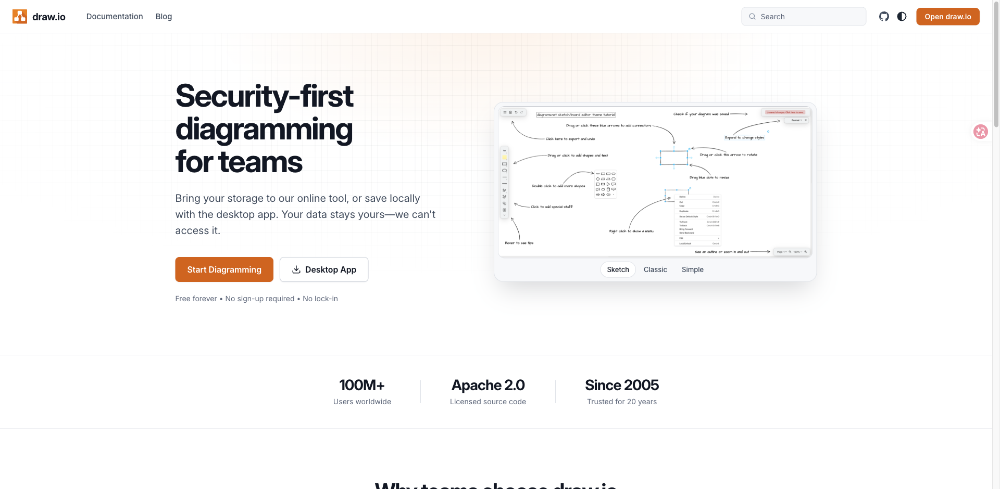

免费开源的拖拽式图表工具，文件可以只存在你自己的存储里。
复刻一张「AWS 三层架构」，带 10px 网格、形状库与图层面板
draw.io 的视觉语言：直角矩形（圆角 0）、1px 纯黑描边、白/浅色填充；图标是简化的线框符号，不是彩色云图标；连线是带折角的正交折线，箭头实心三角；画布铺满 10px 淡网格，右侧常驻形状库和图层面板。它从不像“设计稿”，更像一张能画图的 IDE。

拖拽式图表编辑器，开源（Apache 2.0），有 Web 版、桌面版和 VS Code / JetBrains 插件。流程图、网络拓扑、UML、BPMN、云厂商图标集都能画，几乎不挑图型。
核心卖点是数据主权：文件可以存在自己的 Google Drive / OneDrive / Git 仓库或纯本地，官方拿不到你的图。它靠 Confluence 插件等付费集成赚钱，编辑器本身免费。